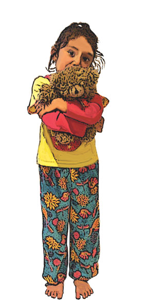

6. Childhood Illnesses
 Sudden Infant Death Syndrome (SIDS)
Sudden Infant Death Syndrome (SIDS)
 Childhood Illnesses and Conditions
Childhood Illnesses and Conditions
 Bronchiolitis
Bronchiolitis
 Chickenpox (Varicella)
Chickenpox (Varicella)
 Measles
Measles
 German Measles (Rubella)
German Measles (Rubella)
 Mumps
Mumps
 Tonsillitis (Pharyngitis)
Tonsillitis (Pharyngitis)
This chapter covers Sudden Infant Death Syndrome (SIDS) and childhood illnesses that may be useful to parents.
By the end of this section you should be able to:
Describe the three ways to reduce the risk of a SIDS emergency
Manage a SIDS emergency
Recognise a variety of childhood illnesses